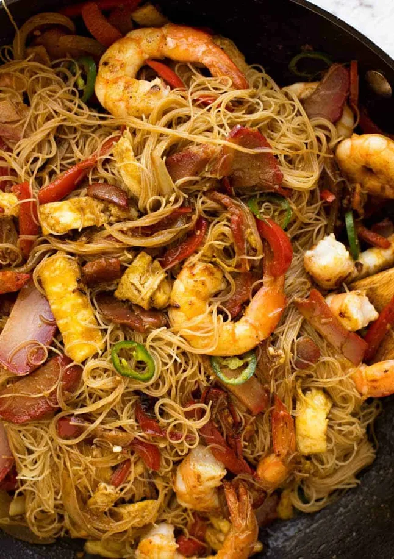
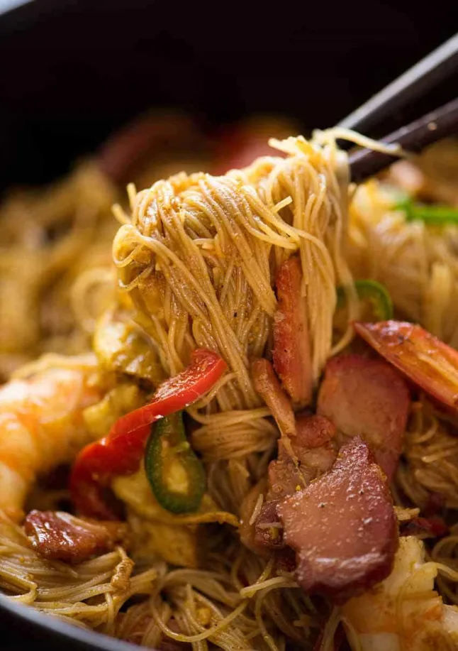

Singapore-style Noodles

Singapore-style Noodles (星洲炒米) is a dish of stir-fried cooked rice vermicelli, curry powder, vegetables, scrambled eggs, shrimps and char siu. Singapore noodles are a cantonese creation, and are common in cantonese-style and takeaway restaurants in Hong Kong. The dish dates back to just after World War II, having been developed by cantonese chefs who wanted ways to use curry powder, which had been introduced through the british colonies.
Ingredients
Sauce
- 2 tbsp soy sauce
- 2 tbsp chinese cooking wine
- 2 1/2 tsp curry powder
- 1/2 tsp sugar
- 1/2 tsp white pepper
Stir-fry
- 100 g/3 oz dried rice vermicelli noodles
- 2 tbsp peanut oil
- 8-10 medium raw shrimps, shelled and deveined
- 2 eggs (beaten)
- 1/2 medium onion, thinly sliced
- 4 garlic cloves, minced
- 1 tsp ginger, freshly grated
- 1/2 lb/250 g chinese barbecue pork (char siu), thinly sliced
- 1 cup red capsicum/bell pepper
- 2 tsp thinly sliced hot green pepper (optional)
Instructions
- Combine the sauce ingredients in a small bowl and mix.
- Place rice vermicelli noodles in a large bowl filled with boiled water and soak as per packet instructions. Drain and set aside.
- Heat 1 tbsp of oil in a wok or heavy based fry pan over medium heat. Add the shrimps, cook until just cooked (about 2 1/2 to 3 minutes). Remove and set aside.
- Add the egg and spread it out to make a thin omelette. Once set, use a spatula to roll it up, remove from the wok and slice (while still rolled up).
- Return the wok to medium heat and add the remaining 1 tbsp of oil. Add the garlic, ginger and onion, cook for 2 minutes until onion is slightly softened.
- Add capsicum and cook for 1 minute.
- Add noodles and sauce, give it a few tosses. Then add the egg, pork, shrimps, chillies (if using). Toss until the sauce coats all the noodles and everything is heated through, about 1 to 2 minutes.
- Serve immediately and enjoy!

Home